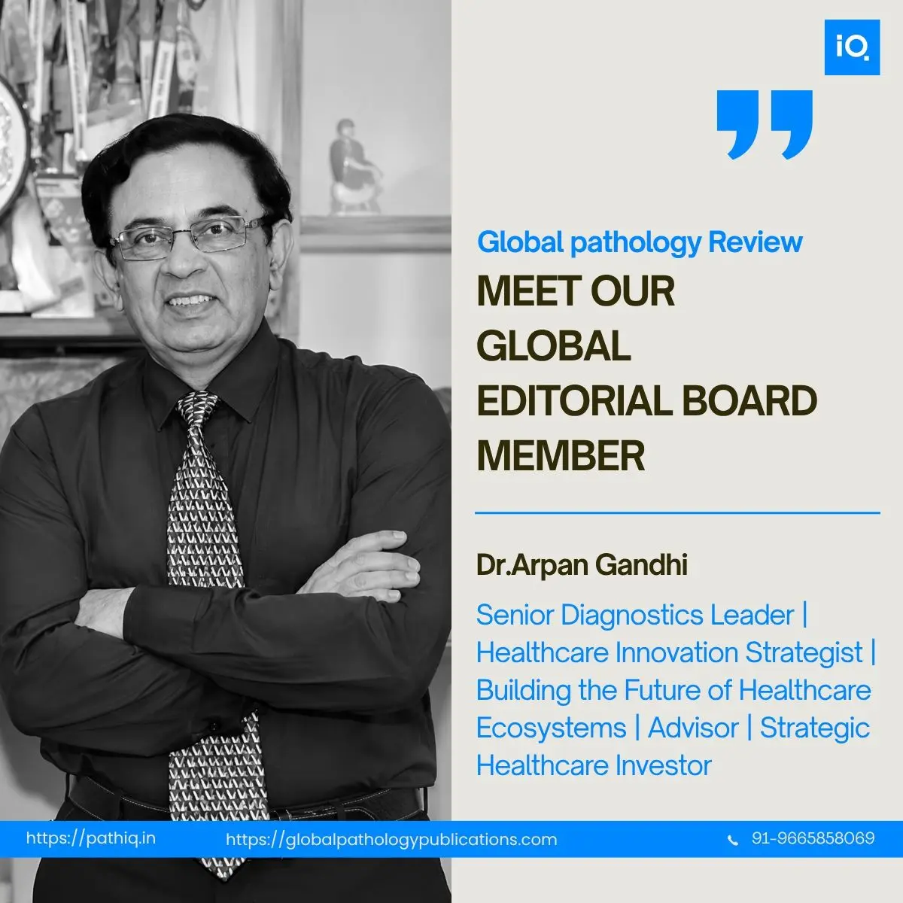

Joining the Global Pathology Publications Editorial Board is a recognition I receive with genuine humility and gratitude.
Pathology has been the discipline I have returned to throughout my career — not merely as a clinical practice, but as a calling. The ability to arrive at a diagnosis that shapes a patient's entire treatment journey is a responsibility I have never taken lightly. Being welcomed to a platform committed to advancing high-quality pathology research, education, and global collaboration feels like a natural extension of that commitment.
Over nearly three decades, I have worked across every dimension of diagnostic medicine — from building laboratory quality systems and leading multi-city acquisitions, to mentoring the next generation of pathologists and navigating the integration of AI into diagnostic workflows. That breadth of experience is what I hope to contribute most meaningfully to this Editorial Board.
Scientific publishing is one of the most important pillars of medicine. It is how knowledge travels — from a single laboratory's findings to the protocols that shape care for millions of patients. The integrity of that process matters enormously, and I am committed to upholding the highest standards of scientific rigour in everything I review and contribute.
My sincere gratitude to the entire Path-iQ and Global Pathology Publications team for this trust, and for their dedication to elevating pathology science across borders.